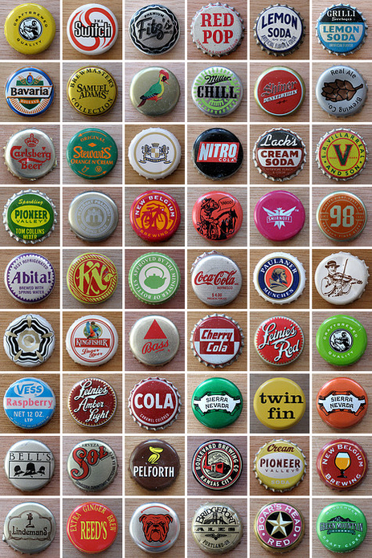
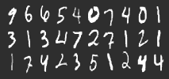

2013-02-01-Obtaining-Data
Table of Contents
- 1 Obtaining Data
- 2 Ways to Collect
- 3 Exploring Data
- 4 Yelp Academic Dataset
- 5 CLI introduction
- 6
wget - 7
scp - 8
gunzipunzip - 9
less - 10 Searching in
less - 11
grep - 12
wc - 13 Composable
1 Obtaining Data
2 Ways to Collect two_col
- Operational Data
- Data Warehouse
- Unstructured Data
- External API
- Data Sets

2.1 Operational Data
- Most frequent in industry
- Usually stored in databases best suited for transactional use
- Challenge is reorganizing data to suit question
2.1.1 Data from production notes
- Most frequently you'll have data that is being used by the application, and you'll want to find insights in it
- We'll go into more detail in another class, but online use is optimized for small queries and small updates
- Frequently just accessing the data in bulk is a software engineering
problem:
- ensuring long queries don't hold up production usage
- joining across databases via software
- understanding esoteric columns, like "flags"
- Often will want to reorganize data to look like transactional
- img: http://woodwarddesign.ca/blog/2009/03/06/bottle-caps/
2.2 Example
- Find the user names with most "liked" reviews on Yelp
users
| userID | name | flags |
| 25234 | Jim | 0x200 |
reviews
| reviewID | businessID | userID | stars | text | flags |
| 282 | 52432 | 25234 | 4 | great place! | 0x1 |
feedback
| reviewID | srcUserID | ufcFlags | flags |
| 282 | 8205 | 0x1 | 0x0 |
2.2.1 Distributed Data notes
- At Yelp we have a variety of database tables, and those tables can be spread across different databases
- At a minimum we frequently need to
JOINacross tables to answer queries- eg. matching up user names with reviews from separate tables
- It is possible the review table is only indexed on business ID, and so finding all reviews by a user is really disk intensive: make sure you're not slowing down the whole site!
- An additional challenge is when the "feedback" tables are in a separate database: can no longer issue normal SQL queries
- What are these "flag" columns for?
- Exactly: no one knows. Often must look into code, or compare data to
production representation to guess meaning. In Yelp,
0x1often means "inactive", so we probably don't want to count that feedback
2.3 Data Warehouse two_col
- Data located on same system
- Organized for analytics queries
- Requires extra maintenance and understanding of construction
2.3.1 No free lunch notes
- A strong data warehouse can be a big improvement over operational data
- Hopefully, someone has already cleaned, joined data in a way that makes sense!
- Optimized for long running queries: less fear of brining down website!
- But you must learn how that process was accomplished in order to understand potential problems
- How to handle missing data?
- We'll go into more detail about how data warehouse schemas compare to online ones later in the course
2.4 Unstructured
- Haphazard collection of data
- Unclear what structure should be
- Examples: Web logs, text, multimedia
- Must extract structure eventually
2.4.1 Yelp JSON logs notes
- When developing a web application, new context or details become important: how long did certain requests take? What link did a user follow to a website?
- Relational Databases aren't well suited for these wide varieties of potential attributes that don't apply to all items
- So the current work around is just to write all useful information down in a log, and extract what is needed later
- Text, like business reviews, another example: desired structure changes radically between questions: How many words? Characters? What is the sentiment?
- Pictures can contain attributes like color depth, length, width
- First step of data mining is often imposing structure on data: the data is not inherently unstructured, it just is unclear what the structure should be until query time
2.5 Search Logs Example
193.139.1 jim [10/Oct/2013:13:55:36 -0700] "GET /search?query=headache HTTP/1.1" 200 9288 282.482.3 shreyas [10/Oct/2013:13:56:36 -0700] "GET /search?query=bananas HTTP/1.1" 200 2929 345.114.1 steven [10/Oct/2013:13:56:37 -0700] "GET /search?query=cold HTTP/1.1" 200 8232 10.328.52 anne [10/Oct/2013:13:56:39 -0700] "GET /search?query=flu+shot HTTP/1.1" 200 2342 10.328.52 lily [10/Oct/2013:13:57:40 -0700] "GET /search?query=i290 HTTP/1.1" 200 2342
| userName | date | query |
| jim | 10/Oct/2013:13:55:36 -0700 | headache |
| shreyas | 10/Oct/2013:13:56:36 -0700 | bananas |
| steven | 10/Oct/2013:13:56:37 -0700 | cold |
| anne | 10/Oct/2013:13:56:39 -0700 | flu shot |
| lily | 10/Oct/2013:13:57:40 -0700 | i290 |
2.5.1 Imposing Structure notes
- Extract only the rows we know follow a format
- Format queries from some encoding (eg. URL) to standardized format
2.6 External APIs
- Better documented than internal data!
- More limited in amount and detail
- Commonly HTTP/REST based
2.6.1 Motivation notes
- Companies are often searching for other ways to leverage their data
- Both for immediate business purposes, and for brand recognition
- Twitter more (in)famous example
- NYTimes another good option
2.7 NYTimes API Example
2.7.1 Accessing these notes
- More info on how to access these APIs is in the Web Architecture class, but feel free to ask Shreyas or I about how best to access them
2.8 Data Sets
- Download large, curated set of data all at once
- Formats vary, but usually documented
- Can be useful to combine with other datasets or APIs

2.8.1 Research notes
- Data sets commonly used in research: can compare different techniques on same data to understand advantages
- Sizes can range to a few MB to GB
- JSON, CSV, XML all potential formats. Cleaning, organization for your question again becomes an important aspect
2.9 Data Set Example two_col
3 Exploring Data
- Data sets are frequently too large to fit in standard tools like Excel or Word
- Simplest to explore on the command line
- Homework will be exploring a data set of your choice
3.1 Size notes
- Some formats will not be easily parsed into Excel: eg. JSON, XML
- Word will be slow, or unworkable for GB size data
- CLI provides many composable tools for text manipulation
4 Yelp Academic Dataset
- Yelp Data Set covers reviews, users, businesses
- To download, you'll need to sign up: process takes ~24 hours for approval
- Use .edu email
4.1 Example notes
- We'll use this as an example, you can use any data set of your choice
- Just for HW, don't need to use for project
5 CLI introduction
- Standard commands available in Learn CLI the hard way
- All example will be run on
ischool.berkeley.edu - Sheyas and I available for more help
5.1 Help notes
- If you're new, don't be intimidated.
- Security policies ensure you can't break anything besides your own files
- Keep backups of important stuff anyway
6 wget
- Used for downloading files
- Downloading with the browser is fine, but sometimes nice to use faster connection, or download it directly to machine you're working on
$ wget 'http://www.grouplens.org/system/files/ml-100k.zip'
6.1 Command notes
- Just
wget URL - I like to use quotes in case there are special characters in the URL, eg
? - Will download to current directory, same name as remote file
7 scp
- Copy a file to or from a remote machine
- Uses same connection as SSH, but copies data instead
- Example: Copy data you've downloaded in your browser
$ scp ~/Downloads/ml-100k.zip jblomo@ischool.berkeley.edu: # or $ scp ~/Downloads/ml-100k.zip jblomo@ischool.berkeley.edu:i290/movielens-100k.zip
7.1 Command notes
- Trailing
:is important: signifies remote machine - If you don't specify path or filename, will copy the file with the same name into your home directory
8 gunzip unzip
- Uncompress data sets for simpler, faster manipulation
$ unzip ml-100k.zip # or $ gunzip yelp_academic_dataset.json.gz
8.1 Commands notes
- unzip
- expand potentially many file, leave original alone
- gunzip
- expand original file, leaving only the uncompressed version
9 less
- View a file
- History: original command was called
moreto see a file a page at a time - "Less is more"
less yelp_academic_dataset.json
10 Searching in less
/(forward slash) lets you input search textqwill quit
/type": "user" /type": "review"
10.1 Command notes
- Useful for finding specific instances to investigate
11 grep
- Find and print lines matching a "regular expression"
- Regular expressions are "find" on steroids, but you can use simple strings
$ grep 'type": "review"' yelp_academic_dataset.json
12 wc
- "wordcount" counts characters, words, lines
- Most useful in data sets for lines:
-l
$ wc -l yelp_academic_dataset.json 474434 yelp_academic_dataset.json
13 Composable
- Genius of Unix: do one thing well, compose commands to get what you want
|pipe characters "sends" output from one program to the input of another- How many reviews in the data set?
$ grep 'type": "review"' yelp_academic_dataset.json | wc -l 330071 $ egrep -o 'business_id": "\w+"' yelp_academic_dataset.json | sort -u | wc -l 9592